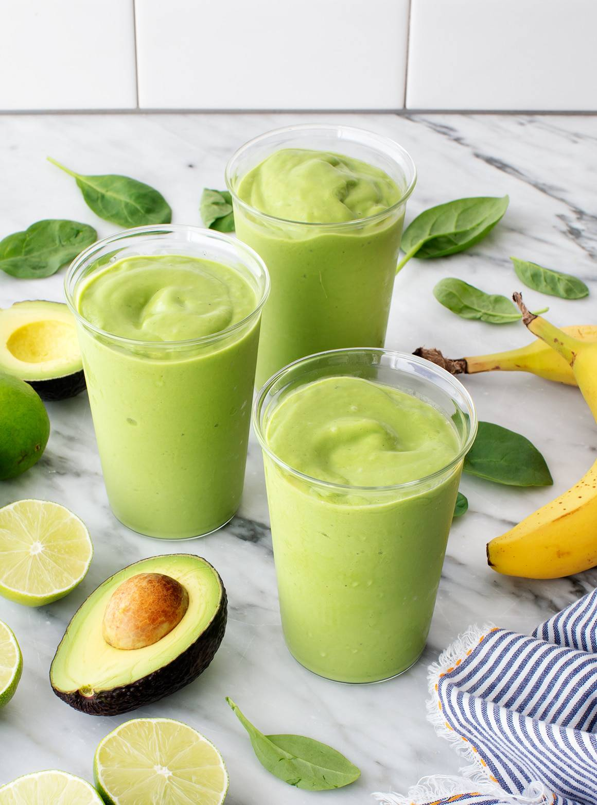

Pantothenic acid, also called pantothenate or vitamin B5 (a B vitamin), is a water-soluble vitamin discovered by Roger J. Williams in 1919.
It is used to make coenzyme A (CoA), a chemical compound that helps enzymes to build and break down fatty acids as well as perform other metabolic functions, and acyl carrier protein, which is also involved in building fats.
Pantothenic acid is found in a wide variety of foods.
Combine the pineapple, spinach, avocado, banana, coconut milk, lime juice and zest, maple syrup, salt, ice, and protein powder, if using, in a blender. Blend until creamy.
Taste and adjust the sweetness to your liking. If you prefer a sweeter smoothie, add more maple syrup. If the consistency is too thick, add more coconut milk, and blend again.
